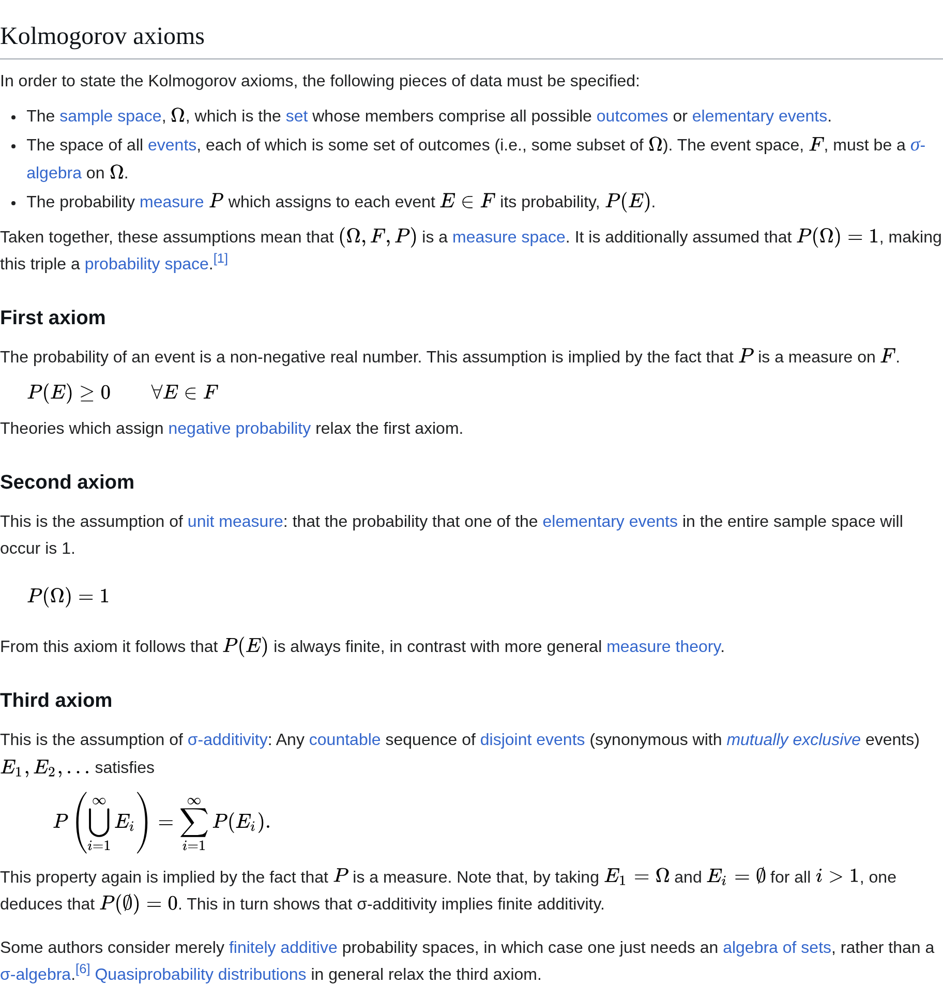
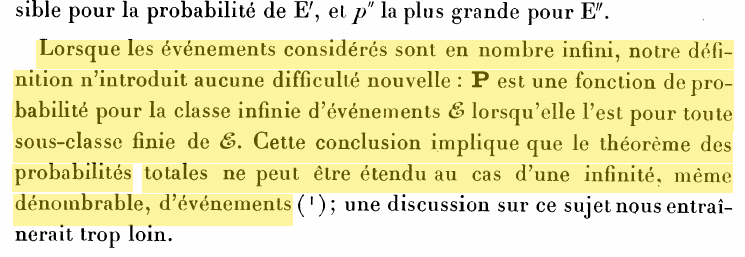

09wk-2: 확률, 확률변수
1. 강의영상
2. 확률
A. Motivation
- 이제 우리는 확률을 정의할 준비가 되었다. (놀랍게도 지금까지 우리는 확률을 정의한 적 없다)
# 생각예제1
동전을 한 번 던지는 상황을 생각하자. \(\Omega=\{H,T\}\) 이다. 공평한 동전이라면 우리는 보통 확률을 아래와 같이 준다.
- \(P(\Omega)=1\)
- \(P(\{H\})=\frac{1}{2}\)
- \(P(\{T\})=\frac{1}{2}\)
- \(P(\emptyset)=0\)
이렇게 써 놓고 보니, 확률이라는 것은 어떠한 집합이 입력으로 들어가고 \([0,1]\) 사이의 값이 출력으로 나오는 함수라고 해석할 수 있다.
그런데 이 숫자들은 아무렇게나 정한 것이 아니다. 예를 들어 \(P(\Omega)=0.5\) 라면 이러한 함수 \(P\)를 확률이라고 생각하지는 않을 것이다. 그렇다면 확률이라는 함수는 어떠한 특성을 만족해야 할까? 이 예제에서는 아래 세 가지가 지켜지고 있다.
- 확률은 음수가 아니다. (네 값이 모두 \(0\) 이상이다)
- 전체집합의 확률은 \(1\)이다. (\(P(\Omega)=1\))
- 서로소인 집합들의 합집합의 확률은 각 확률의 합이다. (\(P(\{H\}\cup\{T\})=P(\{H\})+P(\{T\})\))
동전 예제에서는 서로소인 집합이 두 개뿐이었지만, 좀 더 일반적인 상황에서는 3에서 등장하는 서로소인 합집합을 유한 개가 아니라 셀 수 있는 무한 개까지 확장시킨다. 즉 서로소인 \(A\), \(B\)에 대하여
\[P(A)+P(B)=P(A\cup B)\]
뿐 아니라, 서로소인 \(A_1,A_2,\dots\)에 대하여
\[P(A_1)+P(A_2)+\cdots=P(A_1\cup A_2\cup\cdots)\]
도 성립해야 한다. 이제 약속 3개를 기호로 다시 정리하면 아래와 같다.
- \(P(A)\geq 0\)
- \(P(\Omega)=1\)
- 서로소인 \(A_1,A_2,\dots\)에 대하여 \(P(\cup_{i=1}^{\infty}A_i)=\sum_{i=1}^{\infty}P(A_i)\)
이것이 확률의 공리이다. 그런데 이것으로 끝일까? 가장 중요한 것이 하나 남았다. 앞에서 확률은 함수라고 했다. 함수라면 정의역이 있어야 한다. 이 예제에서 확률의 정의역, 즉 \(P\)에 넣을 수 있는 집합들의 모임을 보자.
\[\big\{\emptyset, \{H\}, \{T\}, \Omega\big\}\]
바로 시그마필드다! 확률은 정의역이 시그마필드이어야 한다는 조건이 있다. (이건 사실 당연한 거죠. 애초에 시그마필드를 정의한 이유가 뭐였겠어요?)
따라서 아래와 같이 정리할 수 있다.
- 정의역이 시그마필드이고 (2) 공리1,2,3을 만족하는 함수를 우리는 “확률”이라고 부르기로 했어요.
#
A. Definition
- 확률의 정의: \((\Omega, {\cal F})\)가 measurable space 라고 할때, 함수 \(P:{\cal F} \to [0,1]\)이 아래를 만족한다면
- \(P(A)\geq 0\), for any \(A \in {\cal F}\)
- \(P(\Omega)=1\)
- \(P(\cup_{i=1}^{\infty}A_i)= \sum_{i=1}^\infty P(A_i)\), for any countable sequence of disjoint sets \(A_i \in {\cal F}\)
\(P\)를 \((\Omega, {\cal F})\)에서의 probablity measure, 간단히 probablity라고 한다.
- 위키피디아에서도 같은 세 공리를 콜모고로프 공리(Kolmogorov axioms)라는 이름으로 소개한다.

- 고급센스: 공리3과 시그마필드는 어떠한 미묘한 연관이 있어 보인다. 정확히 말하면 이러하다.
- 시그마필드의 성질은 서로소인(disjoint) \(A_1,A_2,\dots\) 을 잴 수 있다면 \(A_1\cup A_2 \cup \cdots\) 역시 잴 수 있어야 함을 의미한다. 즉 \(P(A_1),P(A_2),\dots\) 의 값이 각각 well defined 이면 \(P(A_1\cup A_2 \cup \cdots)\) 의 값 역시 well defined 이어야 한다는 것이다. 공리3은 그 well defined value 가 \(\sum_{i=1}^{\infty}P(A_i)\) 임을 의미하게 된다. 즉 \(P(A_1\cup A_2 \cup \cdots) = \sum_{i=1}^{\infty}P(A_i)\) 이다.
- 만약에 \(P\)의 정의역이 시그마필드가 아니면 어떻게 되나? 공리3을 말할 수 없게 된다. 왜냐하면 시그마필드가 전제되지 않으면 \(P(A_1),P(A_2),\dots\) 의 값이 각각 well defined 이더라도 \(P(A_1\cup A_2 \cup \cdots)\) 의 값 역시 well defined 라는 보장이 없고, 그러면 공리3의 좌변 \(P(\cup_{i=1}^{\infty}A_i)\) 은 정의 자체가 안 된다. (왜냐면 \(\cup_{i=1}^{\infty}A_i\) 가 잴 수 없는 집합일 수도 있으니까)
- 제 생각: 확률을 헷갈리지 않고 잘 이해하는 포인트는 (1) 확률은 “함수”라는 사실과 (2) 정의역이 “시그마필드”라는 사실입니다.
- 암기!! \(P: {\cal F} \to [0,1]\)
# 예제1
\(\Omega=\{H,T\}\), \({\cal F}=\{\emptyset, \{H\}, \{T\}, \Omega\}\)라고 하자. 아래와 같이 정의한 \(P\)는 확률인가?
\[P(\emptyset)=0, \quad P(\{H\})=-\frac{1}{2}, \quad P(\{T\})=\frac{3}{2}, \quad P(\Omega)=1\]
(해설)
확률은 시그마필드를 정의역으로 가지며 공리1,2,3을 만족하는 함수이다. 그런데 위의 함수는 공리1을 만족하지 않으므로 확률이 아니다.
#
# 예제2
\(\Omega=\{H,T\}\), \({\cal F}=\{\emptyset, \{H\}, \{T\}, \Omega\}\)라고 하자. 아래와 같이 정의한 \(P\)는 확률인가?
- \(P(\emptyset) = 0\)
- \(P(\{H\}) = \frac{1}{2}\)
- \(P(\{T\}) = \frac{1}{3}\)
- \(P(\Omega) = 1\)
(해설)
확률은 시그마필드를 정의역으로 가지며 공리1,2,3을 만족하는 함수이다. 그런데 위의 함수는 공리3를 만족하지 않으므로 확률이 아니다.
#
# 예제3 – 시그마필드가 정의역이 아닌 경우
\(\Omega=\{H,T\}\), \({\cal F}=\{\emptyset, \{H\}, \Omega\}\)라고 하자. 아래와 같이 정의한 \(P\)는 확률인가?
- \(P(\emptyset) = 0\)
- \(P(\{H\}) = \frac{1}{2}\)
- \(P(\Omega) = 1\)
(해설)
확률은 시그마필드를 정의역으로 가지며 공리1,2,3을 만족하는 함수이다. 그런데 위의 함수 \(P\)는 시그마필드에서 정의되지 않았으므로 확률이 아니다.
#
# 예제4
\(\Omega=[0,1]\) 이고, \({\cal F}\)는 르벡메저가 잘 정의되는 집합들의 모임(시그마필드)이라고 하자. \({\cal F}\)의 원소 \(A\)에 대하여 확률 \(P(A)\)를 \(A\)의 르벡메저(길이)로 정의하자. 아래의 물음에 답하라.
(1) \(P(\{1\})=\) ?
(2) \(P\left(\{1,\frac{1}{2},\frac{1}{3},\dots\}\right)=\) ?
(3) \(P\left([0,1] - \{1,\frac{1}{2},\frac{1}{3},\dots\}\right)=\) ?
(해설)
(1) \(0\) 이다.
(2) \(A=\{1,\frac{1}{2},\frac{1}{3},\dots\}\) 라고 하자.
\[P(A)=P(\{1\})+P(\{\tfrac{1}{2}\})+P(\{\tfrac{1}{3}\})+\cdots=0+0+0+\cdots=0\]
이다. 위의 식을 좀 더 세련되게 아래처럼 쓸 수도 있다.
\[P(A)=P\left(\cup_{a \in A}\{a\}\right)=\sum_{a \in A}P(\{a\})=0\]
(3) \(B=[0,1]-\{1,\frac{1}{2},\frac{1}{3},\dots\}\) 로 두자. 언뜻 생각하면 이렇게 볼 수 있다.
\[P(B)=P\left(\cup_{b \in B}\{b\}\right)=\sum_{b \in B}P(\{b\})=0\]
그렇지만 공리3은 두 번째 등호를 허용하지 않는다. 따라서 \(P(B)=0\) 이 아니다. (이게 무한 번의 기적과 같은 이상한 논리를 주장하는 사람을 깨는 가장 깔끔한 수단이다. 하지만 이를 이해할 수 있는 사람은 무한 번의 기적과 같은 이상한 논리를 펴지 않겠지…) 그러면 \(P(B)\)는 어떻게 구해야 하나?
\(A=\{1,\frac{1}{2},\frac{1}{3},\dots\}\) 라고 두자. 공리3에 의하여 아래가 성립한다.
\[P([0,1])=P(A)+P(B)\]
\(P(A)\)는 (2)에 의하여 \(0\)이고 \(P([0,1])=P(\Omega)=1\) (공리2) 이므로 \(P(B)=1\) 이다.
#
# 예제5
\(\Omega=\mathbb{N}\) 이고, \({\cal F}\)는 \(\mathbb{N}\)의 모든 부분집합들의 모임이라고 하자.
(1) 자연수 \(n\)을 확률 \(\frac{1}{2^n}\) 으로 뽑고 싶다고 하자. 즉 \(1\)은 \(\frac{1}{2}\), \(2\)는 \(\frac{1}{4}\), \(3\)은 \(\frac{1}{8}\), \(\dots\) 의 확률로 뽑는다. \({\cal F}\)의 원소 \(A\)에 대하여 \(P(A)=\sum_{n\in A}\frac{1}{2^n}\) 으로 정의하면 \(P\)는 적절한 확률인가?
(2) 자연수를 모두 같은 확률로 뽑는다고 하자. \(P\)를 잘 정의할 수 있는가?
(해설)
(1) 적절한 확률이다. 정의역 \({\cal F}\)는 시그마필드이고, 공리 1, 2, 3을 모두 만족한다.
(2) 잘 정의할 수 없다. 모든 자연수의 확률이 같다고 하고 그 값을 \(c\)라 하자. 즉 \(P(\{n\})=c\) 이다. \(\mathbb{N}=\{1\}\cup\{2\}\cup\{3\}\cup\cdots\) 은 서로소인 한 점 집합들의 합집합이므로 공리3에 의하여
\[P(\mathbb{N})=c+c+c+\cdots\]
이다. 그런데 \(c=0\) 이면 우변은 \(0\) 이고, \(c>0\) 이면 우변은 \(\infty\) 이다. 어느 쪽이든 공리2 \(P(\mathbb{N})=1\) 과 맞지 않는다. 따라서 자연수 전체에서 “공평하게” 하나를 뽑는 확률은 없다.
#
- 노트: 현대확률론에서는 자연수의 집합 전체에서 하나의 수를 공평하게 뽑을 확률은 정의할 수 없다.
- 이는 직관적이지 않다.
- 이걸 정의하려면 공리3을 부정해야 한다. (가산가법성을 유한가법성으로 바꿔야 한다)
- 이러한 이유로 가산가법성(공리3)을 확률의 조건으로 받아들이지 않은 학자도 있다. 대표적인 사람이 드 피네티다. 그는 자연수 하나를 공평하게 뽑는 추첨도 일관된 확률이어야 한다고 보았고(지금은 이것을 «드 피네티 추첨(de Finetti lottery)»이라고 부른다),1 1930년 프레셰(Fréchet)와 주고받은 논문들에서부터 이 입장을 지켰다. 아래는 그의 1937년 논문의 한 대목이다.

2. 확률변수의 정의
A. 불완전한 정의
- 확률변수: \(X:\Omega \to \mathbb{R}\)인 조금 특별한 성질을 가진 함수
- 정의역: \(\Omega\)
- 치역: \(\mathbb{R}\)
# 예제1 – 동전예제
1. outcomes2: \(H\),\(T\).
2. sample space: \(\Omega = \{H,T\}\)
3. event3: \(\emptyset\), \(\{H\}\), \(\{T\}\), \(\{H,T\}\).
4. \(\sigma\)-field: \({\cal F}=\) \(\Omega\)의 모든 부분집합의 모임
5. probability measure function: \(P: {\cal F} \to [0,1]\) such that
- \(P(\emptyset) = 0\)
- \(P(\{H\}) = \frac{1}{2}\)
- \(P(\{T\}) = \frac{1}{2}\)
- \(P(\Omega) = 1\)
6. random variable: \(X: \Omega \to \mathbb{R}\) such that
- \(X(H)=1\)
- \(X(T)=0\)
만약에 편의상 \(\Omega=\{H,T\}=\{\omega_1,\omega_2\}\)와 같이 사용한다면
- \(X(\omega_1)=1\)
- \(X(\omega_2)=0\)
#
B. 헷갈려 (1) (\(\star\star\star\))
- 질문1: 아래의 표현 중 옳은 것은?
- \(X(H)=0\)4
- \(P(\{H\})=\frac{1}{2}\)5
- \(P(\{\omega_1\})=\frac{1}{2}\)6
- \(P(H)=\frac{1}{2}\)7
- \(P(\{H,T\})=1\)8
- \(P(\omega_1)=\frac{1}{2}\)9
- 질문2: 질문1의 4번의 표현을 많이 본적 있다. 예를들어서 고등학교에서 두 사건의 독립에 대해 배울때 아래와 같은 방식으로 표현했었다. // 출처: 네이버 블로그
두 사건 \(A\), \(B\)에 대하여 \(P(B|A) =P(B|A^c) =P(B)\) 이면 두 사건이 독립이라고 한다~~
그렇다면 이 표현은 틀린걸까?
(해설)
여기에서 사건 \(A\), \(B\)는 event을 의미하며 outcome을 의미하는게 아님. 즉 \(A\), \(B\)는 집합임.
암기: 확률은 항상 집합을 입력으로 받아야 함!!
- 질문3(\(\star\star\star\)): 수리통계 시간에서 아래와 같은 표현 본 적 있다.
\[P(X=1)=\frac{1}{2}\]
그런데 \(P\)의 입력으로는 집합이 들어가야하는데, \(X=1\)은 그냥 수식임. 그렇다면 이 표현은 틀린 표현일까??
(해설)
사실 \(P(X=1)\)의 의미는 아래와 같은 표현의 축약형이다.
\[P\big(\{\omega: X(\omega)=1 \} \big)\]
\(\{\omega: X(\omega)=1\} = \{\omega_1\} = \{H\}\) 를 의미하므로 결국
\[P(X=1)=P(\{\omega: X(\omega)=1\})=P(\{H\})\]
이 된다. 따라서 옳은 표현이다.
C. 확률변수에 대한 통찰
- 아래와 같은 표현을 다시 관찰하자.
\[P(X=1)=P(\{\omega: X(\omega)=1\})=P(\{H\})\]
통찰1. 확률변수가 “함수”라는 사실을 떠올리고 \(1\)이라는 값이 확률변수의 “상(image)” 라는 사실을 떠올리면, \(\{\omega: X(\omega)=1\}\)은 1에 대한 “역상(inverse image)”이라고 해석할 수 있다.10
통찰2. 확률변수의 상은 \(\mathbb{R}\)에 맺히게 되고, 확률변수의 역상은 \(\Omega\)의 부분집합 중 하나에 맺히게 된다.
통찰3. 문제는 확률변수의 역상이 항상 잴 수 있는 집합에 맺힌다는 보장이 있냐라는 것이다. 즉 이 예제로 한정하면
\[\{\omega: X(\omega)=1\} \in {\cal F}\]
임을 보장해야 한다는 것이다.
통찰4. 당연히 이러한 보장을 할 수는 없어보인다. 따라서 \(X\)를 단지 그냥
- \(X: \mathbb{\Omega} \to \mathbb{R}\)로 가는 함수
가 아니라
- \(X: \mathbb{\Omega} \to \mathbb{R}\)로 가는 함수 & 역상이 항상 잴 수 있는 집합이어야 함.
이라는 조건이 필요하다.
- 역상이 잴 수 있는 집합인 함수를 간단히 잴 수 있는 함수 (measurable function) 라고 한다.
D. 확률변수의 엄밀한 정의
- 확률변수 (머리속): \(X:\Omega \to \mathbb{R}\) 인 잴 수 있는 함수.
- 확률변수 (엄밀하게): 확률공간 \((\Omega,{\cal F},P)\)와 잴 수 있는 공간 \((S, {\cal S})\)가 있다고 하자. 확률변수 \(X\)는 아래를 만족하는 함수 \(X:\Omega \to S\) 이다.
\[\forall B \in {\cal S}: X^{-1}(B) = \{\omega:X(\omega)\in B \} \in {\cal F}\]
즉 확률변수는 \(\Omega\)에서 \(S\)로 가는 잴 수 있는 함수(measurable function)이다. 특히 \(S=\mathbb{R}^d\)이면 \(X\)를 확률벡터(random vector)라고 한다. (표본공간은 \(\Omega\)이고, \(S\)는 \(X\)의 값이 사는 공간이다. 우리 강의에서는 보통 \(S=\mathbb{R}\)이다.)
Note1: \(\{\omega:X(\omega)\in B \} \in {\cal F}\) for all \(B \in {\cal S}\) 이라 쓰기도 함. 쓰는사람 마음~
- 이렇게 정의해 두면 \(X\)의 값이 \(B\)에 들어갈 확률을 아래와 같이 쓸 수 있다. 앞에서 본 \(P(X=1)=P(\{\omega: X(\omega)=1\})\)이 바로 이 꼴이다.
\[P(X \in B) = P(\{\omega\in\Omega : X(\omega) \in B\})\]
# 예제2 – 확률변수가 아닌 경우
\(\Omega=\{a,b,c,d\}\), \({\cal F}=\{\emptyset, \{a\}, \{b,c,d\}, \Omega\}\)라고 하자. \(S=\{1,2\}\), \({\cal S}=\big\{\emptyset, \{1\}, \{2\}, \{1,2\}\big\}\)(\(S\)의 모든 부분집합의 모임)라 하자. 함수 \(X:\Omega\to S\)를 아래와 같이 정의하자. \(X\)는 확률변수인가?
- \(X(a)=1\)
- \(X(b)=1\)
- \(X(c)=2\)
- \(X(d)=2\)
(해설)
확률변수가 아니다. \(\{1\} \in {\cal S}\)인데
\[X^{-1}(\{1\})=\{\omega: X(\omega)=1\}=\{a,b\} \notin {\cal F}\]
이기 때문이다. 즉 \({\cal F}\)로는 \(\{a,b\}\)를 잴 수 없으므로 \(P(X=1)\)을 정의할 수 없다.
#
# 예제3 – 확률변수인 경우
예제2와 같은 \((\Omega, {\cal F})\)와 \((S,{\cal S})\)에서 함수 \(Y:\Omega\to S\)를 아래와 같이 정의하자. \(Y\)는 확률변수인가?
- \(Y(a)=1\)
- \(Y(b)=2\)
- \(Y(c)=2\)
- \(Y(d)=2\)
(해설)
확률변수이다. \({\cal S}\)의 모든 원소 \(B\)에 대하여 \(Y^{-1}(B)\in{\cal F}\)가 성립한다.
- \(Y^{-1}(\emptyset)=\emptyset \in {\cal F}\)
- \(Y^{-1}(\{1\})=\{a\} \in {\cal F}\)
- \(Y^{-1}(\{2\})=\{b,c,d\} \in {\cal F}\)
- \(Y^{-1}(S)=\Omega \in {\cal F}\)
#
- “\(X\)를 확률변수라고 하자.” 라는 의미? 지금 까지 해온 모든 논의가 압축된 표현…
- 확률이라는건 원래 모든 \(\Omega\)에서는 잘 정의되지 않음.
- 그래도 \(\Omega\)의 부분집합중 잴 수 있는 집합이라는 것이 있는데 그게 \({\cal F}\)야.
- 이 두개를 세트로 묶어서 \((\Omega,{\cal F})\) 이라고 하고 이를 잴 수 있는 공간이라고 하자.
- 이 잴 수 있는 공간 \((\Omega, {\cal F})\) 에서는 이제 확률 \(P\)를 정의 할 수 있어.
- 한편 \(\Omega\)의 원소는 숫자로 되어있지 않으니까 이를 숫자화시키는 어떠한 함수가 필요한데 이것을 우리는 \(X\)라고 할 것임.
- 그런데 \(P(X=1)\)와 같은 표현이 가능하려면 \(X\)의 inverse image가 \({\cal F}\)의 원소이어야 하는데 이게 항상 가능한 것은 아니므로 \(X\)를 잴 수 있는 함수라고 추가가정 해야 함.
“\(X\)를 확률변수라고 하자” 라고 선언하는 것은 아래의 효과를 가진다. (1) \(\Omega\)에 대응하는 \({\cal F}\)가 잘 정의되어 있다고 하자. (2) \(P\) 역시 잘 정의되어 있다고 하자. (3) \(\mathbb{R}\)와 \({\cal R}\)이 잘 정의되어 있다고 하자. (4) \(X: (\Omega,{\cal F}) \to (\mathbb{R},{\cal R})\) 이 잘 정의되어 있다고 하자.
E. 헷갈려 (2) (\(\star\star\star\))
- 확률변수에 대한 오해1: 확률변수는 함수이면서 변수이다???
- 그런거 없음. 함수임. 이름이 틀렸음.
- 함수: \(y=f(x)\), \(f\): function, \(x\): input \(y\): output
- 확률변수: \(x=X(\omega)\), \(X\): function, \(\omega\): outcome11, \(x\): realization
- 확률변수는 함수이지만 보통 \(X(\omega)\)와 같이 쓰지 않고 \(X\)라고 쓴다. \(\Rightarrow\) 혼란의 이유
- 확률변수에 대한 오해2: 확률변수가 변수인지 함수인지 그건 잘 모르겠지만 아무튼 변수값이든 함수값이든 그 결과가 랜덤으로 변한다??
- 확률변수는 함수일 뿐임. 입력이 정해지면 출력이 고정임!
- 동전예제: 입력이 \(\omega=H\)이면 출력은 \(X(\omega)=1\), 입력이 \(\omega=T\)이면 출력은 \(X(\omega)=0\)으로 고정임!
- 확률변수에 대한 오해3: 아니야.. 확률변수는 결과가 랜덤으로 바뀌는 느낌이 맞아. 아래의 예시를 봐!
\[X = \begin{cases} 0 & w.p. \frac{1}{2} \\ 1 & w.p. \frac{1}{2} \end{cases}\]
- \(X\)는 진짜 변수처럼 보이긴함.
- 심지어 변수의 값이 랜덤으로 변하는 것 같음.
(해설)
정확하게는 아래 표현이 맞다.
\[X(\omega) = \begin{cases} 0 & \omega \in \{H\} \\ 1 & \omega \in \{T\} \end{cases} \quad \text{where } P(\{H\}) = P(\{T\}) = \frac{1}{2}.\]
- 확률변수에 대한 오해2에 대한 추가설명
- 확률변수는 결과가 랜덤으로 변하는 함수가 아님, 확률변수는 함수일 뿐임. 입력이 정해지면 출력이 고정임!
- 동전예제: 입력이 \(\omega=H\)이면 출력은 \(X(\omega)=1\), 입력이 \(\omega=T\)이면 출력은 \(X(\omega)=0\)으로 고정임!
- 단지 입력 outcome이 실험에 따라 랜덤으로 변할 수 있는 것임!!
- 요약해보면,
- 확률변수는 변수가 아니다.
- 확률변수는 확률과 관련없다. 랜덤으로 함수값이 바뀌는게 아니다.
Footnotes
Bartha (2004), «Countable Additivity and the de Finetti Lottery», The British Journal for the Philosophy of Science 55(2), 301–321. (2차 문헌)↩︎
outcome 자체는 집합을 의미하는게 아님↩︎
event는 집합을 의미↩︎
O↩︎
O↩︎
O↩︎
X↩︎
O↩︎
X↩︎
참고로 image는 수학책에서 3가지 뜻으로 혼용해서 쓰이는데, 이 문맥에서는 “Image of an element”를 의미함. ref↩︎
입력인데 outcome임, 여기서부터 너무 헷갈려!!↩︎